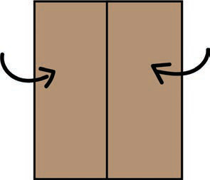

18. Waweza kutumia njia ifuatayo kama hakuna gundi itumikayo kwenye bahasha:
- (i) Chukua utepe wa gundi ya karatasi.
- (ii) Paka gundi ya maji katika sehemu ya nje ya utepe huo.
- (iii) Bandika sehemu uliyopaka gundi katika sehemu ya ndani ya mfuniko wa bahasha.
Katika hatua zilizoainishwa, hakikisha unazingatia usafi ili kupata bahasha safi na za kuvutia.
Hatua za kutengeneza mifuko ya karatasi
1. Kata karatasi umbo la mstatili;
Kielelezo namba 8: Kipande cha karatasi chenye umbo la mstatili
2. Kunja karatasi upande wa kushoto na kulia zikutane katikati na kupandiana kwa sentimita 1;
